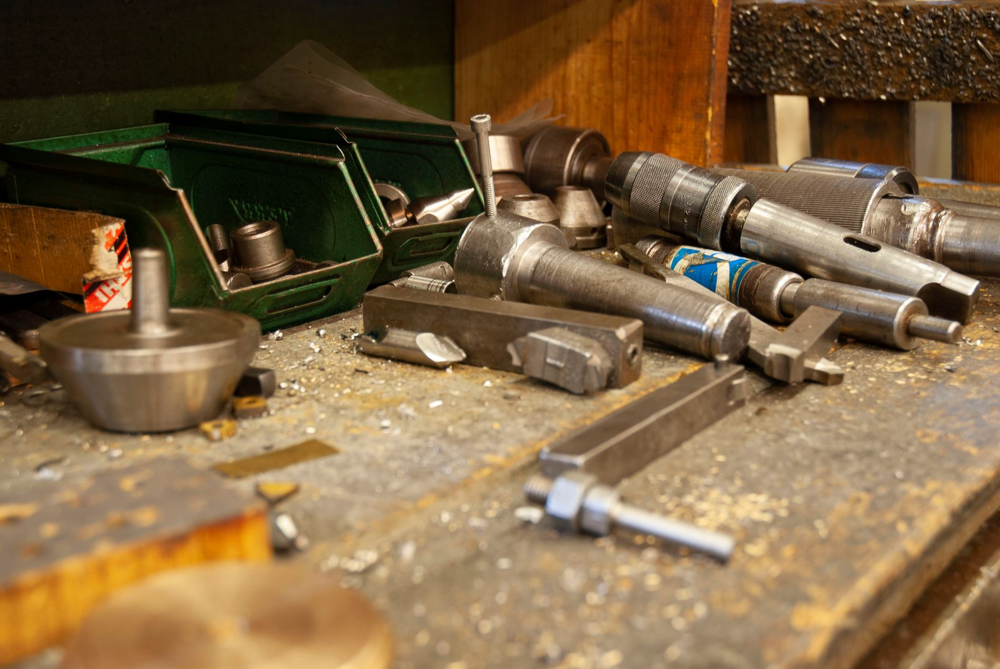
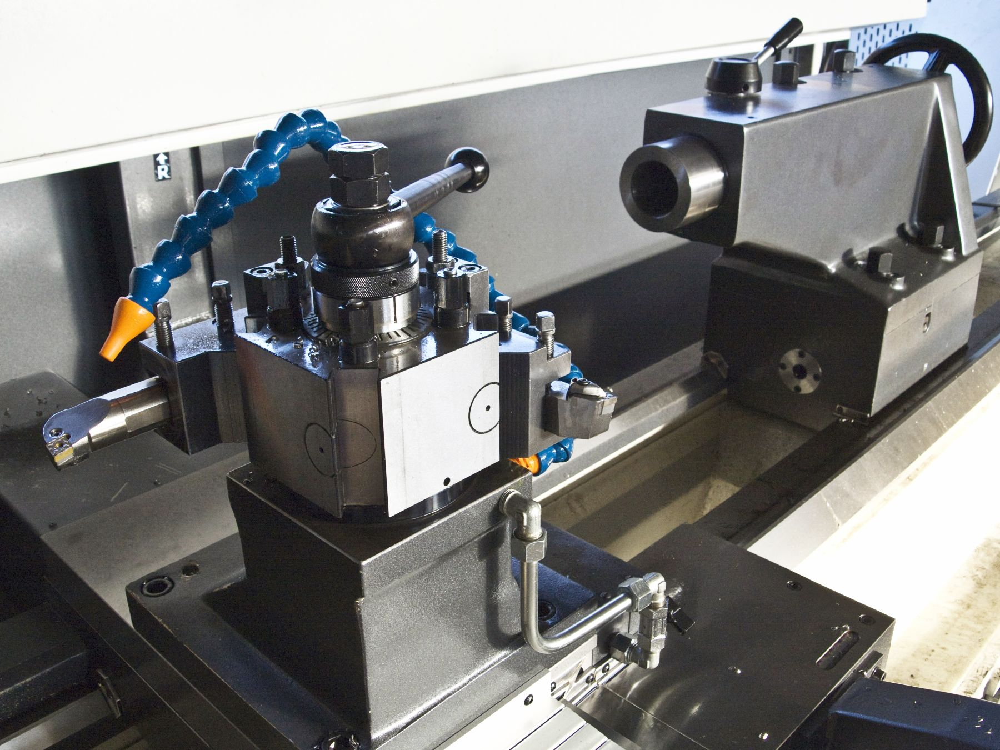
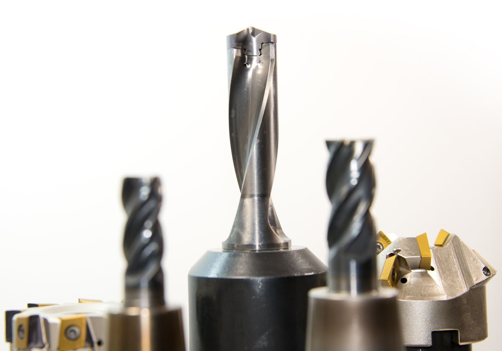
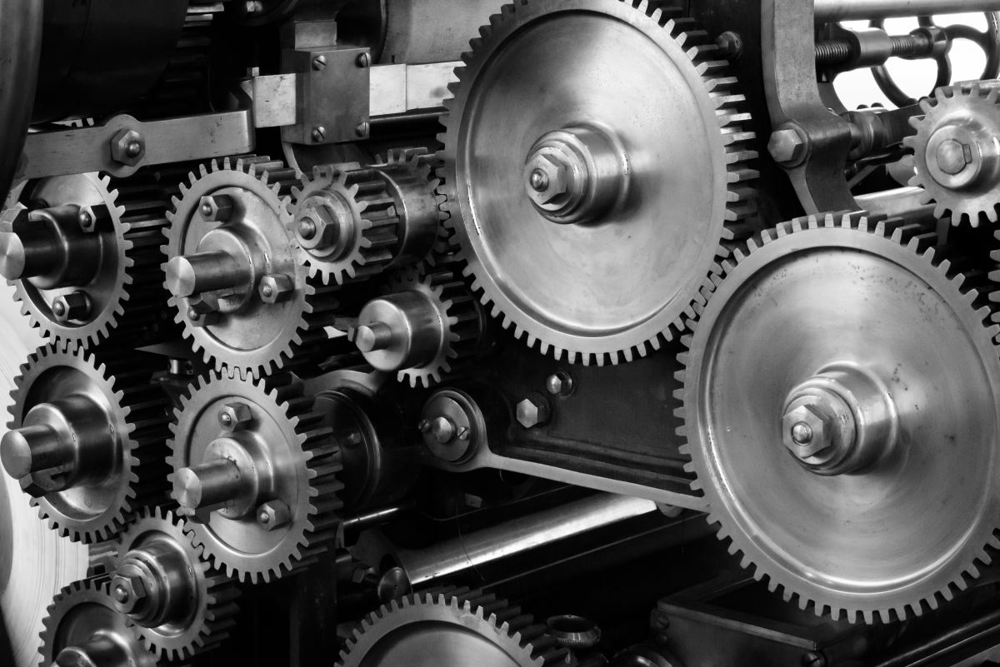
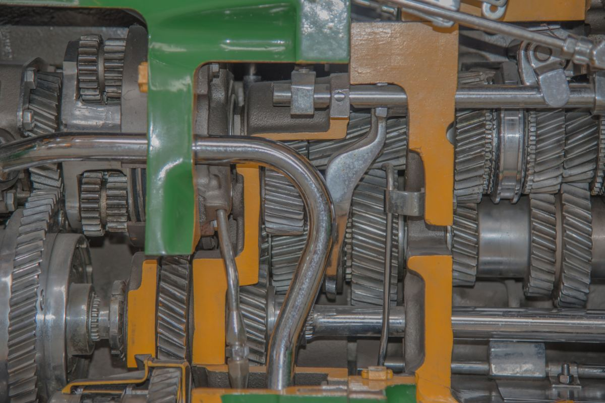
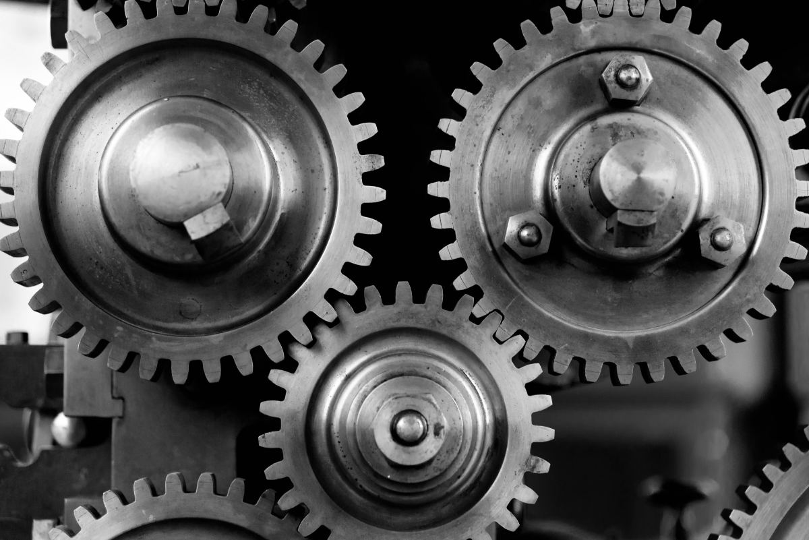
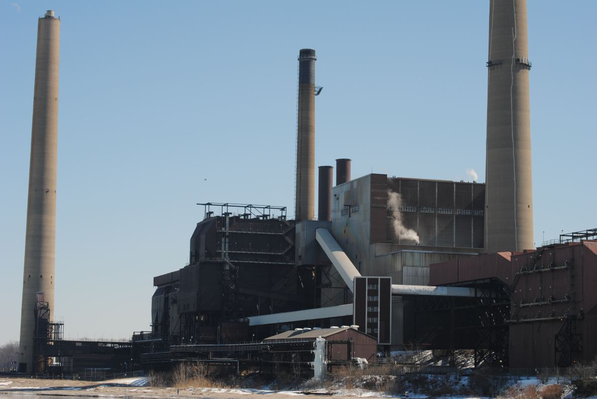
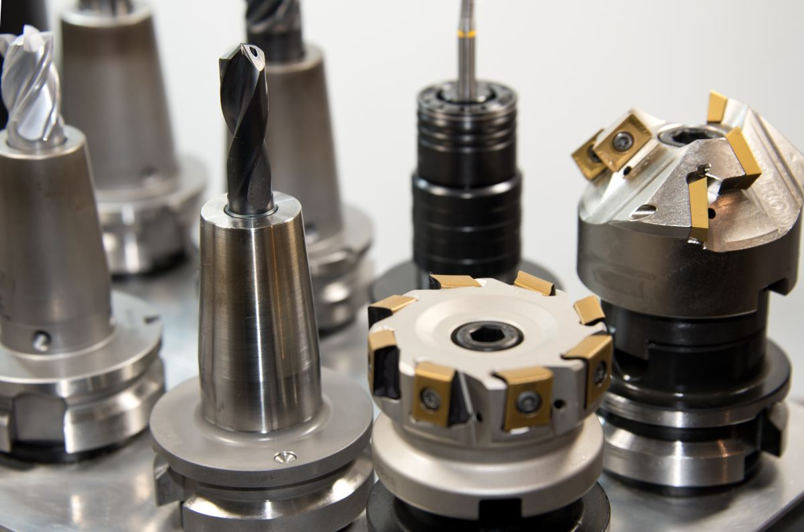

Freire · Región de La Araucanía
La pieza que
ya no se fabrica.
Cuando el repuesto está descontinuado, cuando el importador tarda tres semanas o cuando la planta está parada y no hay tres semanas, la pieza se hace. Eso es una tornería, y no es lo mismo que un taller.
01 — La pieza de esta página
Qué hay que traer
para que le hagan la pieza.
Casi todas las cotizaciones que se demoran, se demoran por esto: el cliente llegó con menos información de la que hacía falta y hubo que llamarlo tres veces. Con estas seis cosas encima del mesón, una tornería cotiza el mismo día.
-
01
La pieza rota, aunque esté en pedazos
Es lo mejor que puede traer. Aunque falte un trozo, la pieza rota da el material, el diámetro, el paso del hilo y el desgaste. Un tornero prefiere una pieza destruida antes que una foto perfecta.
-
02
Si no hay pieza, las medidas
Un croquis a mano sirve. Lo que tiene que estar: diámetros, largos, y sobre todo qué medida es la que tiene que calzar. Una pieza puede salir con cinco cotas sueltas y no entrar por una sola.
-
03
Con qué se topa la pieza
La contraparte. Si el eje va a un rodamiento, tráigalo; si el buje va a una caja, diga cuál. Ninguna pieza trabaja sola, y el juego entre las dos es la mitad del trabajo.
-
04
De qué material era, o de qué debe ser
No es lo mismo un acero común que uno tratado, ni un bronce que un nylon. Si no sabe, dígalo: se estima mirando la pieza. Lo que no conviene es suponer.
-
05
Por qué se rompió
El dato que más plata ahorra y el que casi nadie da. Si la pieza se rompió tres veces en un año, el problema no es la pieza: es el eje que está desalineado o la carga que subió. Hacerla igual es pagar cuatro veces la misma pieza.
-
06
Cuántas, y para cuándo
Una pieza y diez piezas no se hacen igual. Y si la planta está parada, eso se dice de entrada: cambia el orden en que se toma el trabajo, no el precio.
Esta lista es conocimiento general del oficio, escrito por mí. Los plazos, los materiales que TMI trabaja de verdad y hasta qué diámetro llega su torno los completa el negocio: son datos de máquina y no se inventan.

Nadie compra una pieza torneada.
Compra que la planta vuelva a andar.
02 — La pregunta honesta
Cuándo conviene mandarla a hacer
y cuándo conviene comprarla.
Un proveedor que dice «siempre conviene hacerla» está vendiendo, no aconsejando. A veces conviene comprar el repuesto y punto, y decirlo es lo que hace que la planta vuelva a llamar la próxima vez.
Conviene hacerla
- Está descontinuada. La máquina tiene veinte años y el repuesto no existe más. Acá no hay alternativa.
- La planta está parada. Si el original llega en tres semanas y la pieza se puede hacer en días, la cuenta la hace sola el lucro cesante.
- Hay que modificarla. La pieza original nunca aguantó bien y se puede hacer de otro material o con otra tolerancia.
- Son varias iguales. Cuando la misma pieza se cambia seguido, hacer un lote sale distinto que comprar de a una.
- El original viene en un conjunto. A veces la fábrica sólo vende el eje con toda la caja. Ahí hacer una pieza es otra conversación.
Conviene comprarla
- Es un elemento normalizado. Rodamientos, sellos, retenes, correas, pernos de grado. Eso se compra: está normado, probado y sale más barato que fabricarlo.
- El repuesto está en el país y llega rápido. Si el original existe, se consigue y la máquina puede esperar, comprar es lo razonable.
- La pieza es de seguridad y viene certificada. Un elemento que se certifica no se replica: se reemplaza por el que trae papeles.
Esta comparación es del oficio, no de este negocio en particular. Qué recomienda TMI en cada caso concreto lo dice TMI mirando la pieza, y esta página no reemplaza esa conversación.
Quién llama a una tornería
Aserraderos, plantas lecheras, molinos, frigoríficos. Y siempre un martes a las seis.

03 — La otra mitad del nombre
Tornería es la pieza.
Mantención es la máquina.
El nombre dice dos cosas y no son la misma. La tornería empieza cuando algo ya se rompió; la mantención existe para que no se rompa. Un cliente que sólo llama por lo primero está pagando la versión cara del mismo problema.
Vale la pena separarlo en la página, porque el jefe de mantención de una planta busca las dos cosas con palabras distintas y casi nunca en el mismo momento.
- Fabricación de piezas — ejes, bujes, poleas, pasadores, piñones
- Recuperación — rellenar y rectificar una pieza gastada en vez de hacerla de nuevo
- Soldadura y estructuras
- Mantención programada — la visita que se agenda, no la que se pide a gritos
- Terreno — cuando la máquina no se puede mover
Lista de ejemplo de lo que suele cubrir una tornería con mantención industrial. Qué hace TMI de verdad, hasta qué tamaño y si va a terreno, lo completa el negocio: está armada y vacía a propósito.
04 — El oficio
Fierro, medida
y paciencia.






05 — Contacto
Cotizar una pieza.
Si la planta está parada, dígalo en la primera frase. No cambia el precio: cambia el orden.
- Base
- Freire, Región de La Araucanía
- Dirección exacta
- falta — no está publicada
- Horario
- falta — hay que confirmarlo
- Diámetro y largo máximos
- falta — es dato de máquina
- Materiales que trabaja
- falta — hay que confirmarlo
- ¿Va a terreno?
- falta — y hasta dónde
- ¿Atiende urgencias?
- falta — hay que confirmarlo
Las seis líneas en cursiva son las que hay que llenar antes de publicar. Las dos primeras —diámetro y largo máximos— son las que más vale la pena poner: es la primera pregunta que hace un jefe de mantención y casi ninguna tornería de la zona la tiene escrita.